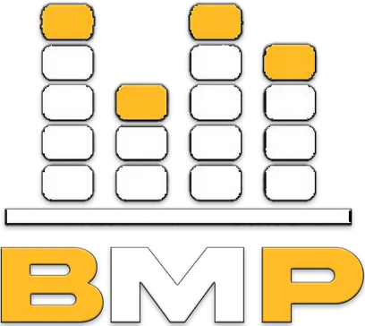
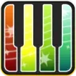

Bard Music Players
MIDI Repository
Play Your Favorite Songs in Eorzea
Below are three choices that allow you to play MIDI files in Final Fantasy XIV.
Choose Your Player

Join BMP Discord
Download BMP
BMP Manual (Outdated)
Join LightAmp Discord
Download LightAmp
LightAmp Wiki

Join Midibard 2 Discord
Download Midibard 2
Midibard2 Manual
Community Tutorials and Links
Join the BML Discord
For another good source of MIDI's
Bard Midi Library
Website for an expansive list of MIDI's
/r/ffxivperformances
Performance community
Bard Music Player source code
on GitHub
Aywren - FFXIV: Bard Music Performance in Eorzea
[한국어] CocoPomel - Korean guide to Bard Music Player
callmeki - Using MML to edit midi for FFXIV Bard Music Player